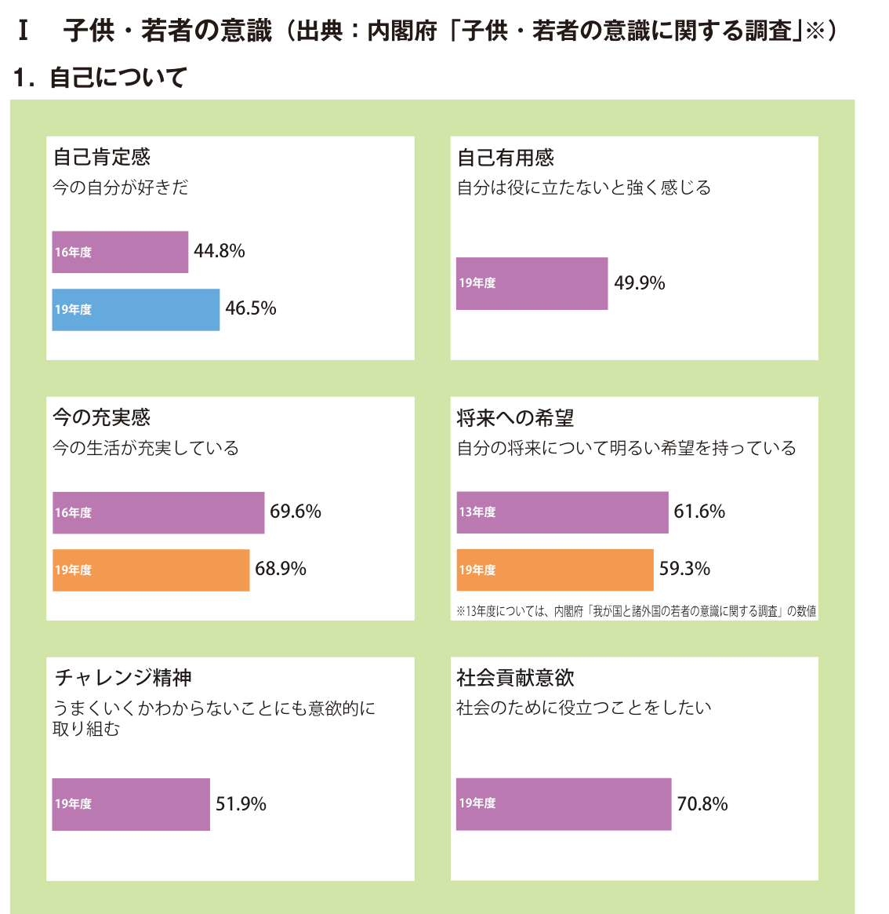
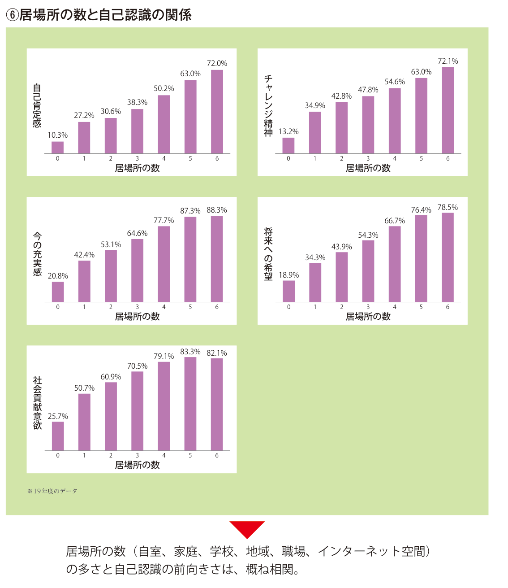
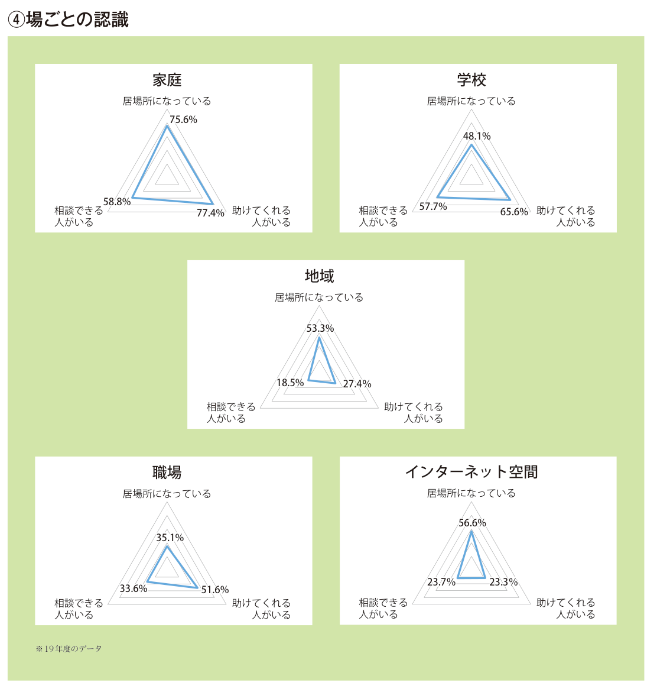
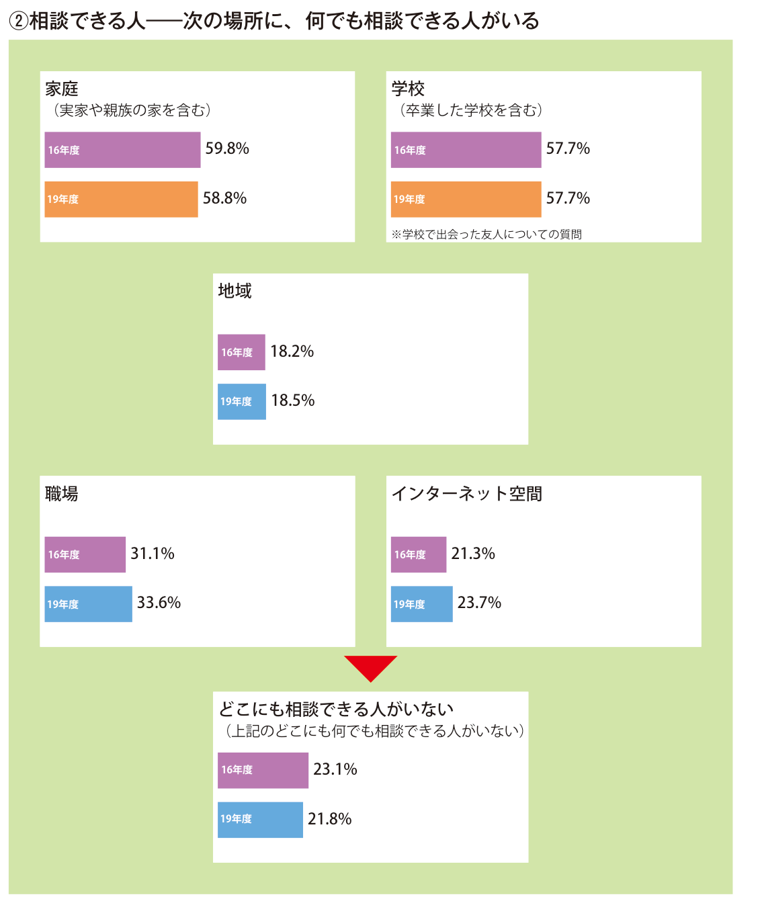
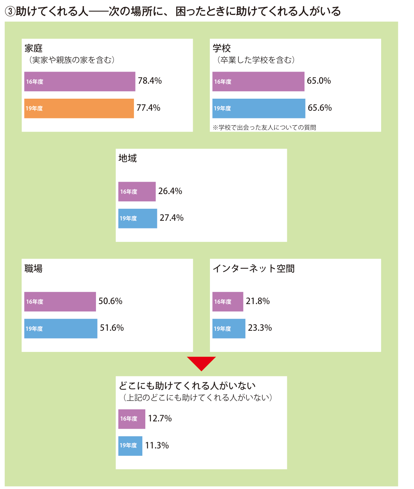
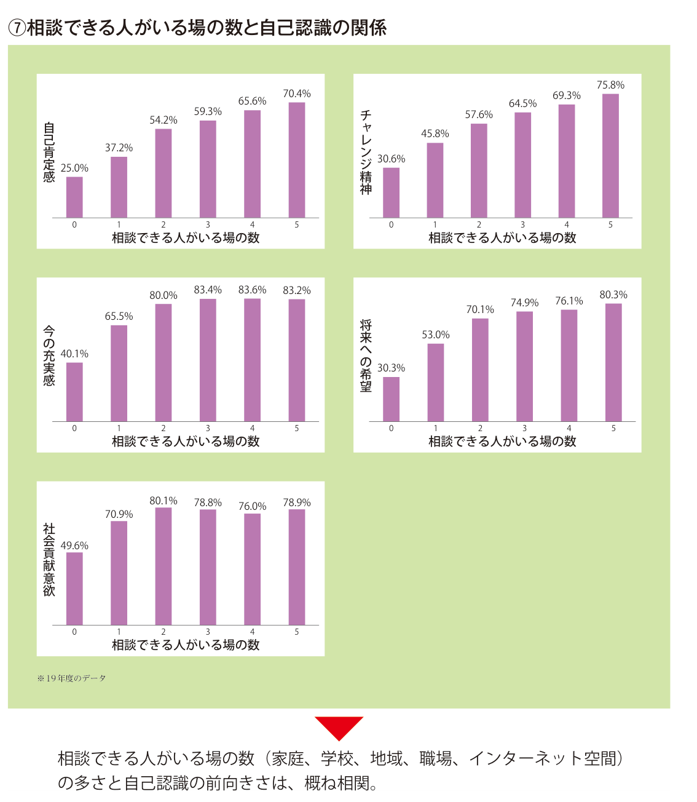

皆様、お世話になっております。プログラミング教室、教室長の彦阪です。
今回は、内閣府がまとめた「令和4年版 子供・若者白書」をもとにした相談できる人の大切さについてご紹介します。
白書のデータからは、居場所が多い若者ほど、自己肯定感やチャレンジ精神、社会貢献意欲が高い傾向が読み取れます。順番に見ていきます。
まず、今の若者は自分をどう見ているのか
白書では、13〜29歳の若者1万人へのインターネット調査（内閣府「子供・若者の意識に関する調査」令和元年度）の結果が紹介されています。 最初に「自己について」の結果です。

自分のことを好きだと言える若者は、半分にも届きません。 そして、半分の若者が「自分は役に立たない」と強く感じている。
チャレンジ精神も約半分です。
それでも「社会の役に立ちたい」は7割
一方で、社会貢献意欲は7割と高くなっています。
「役に立ちたい」と思っている若者は7割いるのに、「自分は役に立たない」と感じている若者が5割いる。 ここからは私の推測ですが、役に立ちたい気持ちはあるのに、それを実感できる場所が足りていないのかもしれません。 人の役に立った、ありがとうと言われた、という経験は、誰かとつながっている場があって初めて得られるものです。 その場の一つが、次にご紹介する「居場所」です。
居場所の数と、自己認識の関係
白書では、自分の部屋・家庭・学校・地域・職場・インターネット空間の6つについて、「ほっとできる場所、居心地のよい場所」になっているかを聞いています。 そして、居場所がいくつあるかで、若者の意識がどう変わるかを比べています。

居場所の数が多いほど、どの項目も割合が高くなっています。 居場所が0か所の若者で「今の自分が好きだ」と答えたのは10人に1人。 6か所ある若者では10人に7人です。
私はこの5つの項目を、こう読み替えています。
- 人にやさしく ― 社会貢献意欲
- 強く ― チャレンジ精神
- 前向きに ― 将来への希望
白書は「居場所の数の多さと自己認識の前向きさは、概ね相関」とまとめています。 相関ですので「居場所を増やせば必ずこうなる」とまでは言えませんが、 居場所が1つ増えるごとに、どの項目もおおむね1割ずつ上がっています。子どもに関わる大人として、居場所を1つでも増やしていく理由にはなると考えています。
同じ白書には、居場所が0か所の若者は、困難な状態が改善した経験が1割に満たず、 知っている支援機関が「ない」と答えた人が7割にのぼるという結果も載っています（概要p.15／白書p.211）。 居場所の少なさは、困ったときに頼れる先の少なさとも重なっているようです。
場所ごとに見ると、見えてくること
では、それぞれの場所は、若者にとってどんな場所になっているのでしょうか。 白書は「居場所になっている」「助けてくれる人がいる」「相談できる人がいる」の3つを、場所ごとに比べています。

三角形が大きく整っているのが家庭と学校です。一方、地域・インターネット・職場は形がいびつで、場所によって足りないものが違います。
地域に、相談できる人がいない
地域は半分以上の若者にとって居場所なのに、相談できる人がいるのは2割ほどです。 近所に顔なじみはいても、悩みを打ち明けられる大人はいない。私はこれを残念に思います。 近所の大人や習い事の先生は、親にも学校の先生にも言いにくい話を聞ける相手になりうる存在です。
インターネットは「居場所」だけど、助けてはくれない
インターネット空間は、居場所になっている割合が学校よりも高いのに、相談できる人・助けてくれる人がいるのはどちらも2割ほどです。 ほっとはできても、困ったときに頼れる相手は見つけにくい場所だといえます。
プログラミング教室を運営している立場ではありますが、だからこそリアルなつながりが大事だと考えています。 目の前で「どうしたの？」と声をかけてくれる人がいることです。
大人になると、職場は居場所になりにくい
職場が居場所になっているのは3割ほどで、6つの場所の中で最も低くなっています。 相談できる人がいるのも3割ほどです。職場に居場所も相談相手もない、という話は珍しくありません。
「助けてくれる人」と「相談できる人」は違う
場ごとの図をもう一度見ると、インターネット以外のどの場所でも「相談できる人」の頂点が「助けてくれる人」より内側にあります。 家庭では、助けてくれる人がいるのは8割近くですが、相談できる人は6割ほど。 職場でも、助けてくれる人は半分いるのに、相談できる人は3割ほどです。 助けてくれる人はいても、相談できる人はそれより少ないことがわかります。

相談できる人がいるのは、家庭と学校でそれぞれ6割ほど。 そしてどこにも相談できる人がいない若者が、5人に1人います。

これに対して、どこにも助けてくれる人がいない若者は1割ほどです。 困ったときに助けてくれる人はいても、その前の段階で相談できる人がいない若者が多いということです。
私は、この2つには違いがあると思っています。 「助ける」は、困りきって切羽詰まった状態になってから必要になるものです。 「相談する」は、その手前、まだ小さな悩みのうちにできることです。
行くところまで行ってしまうと、後戻りが難しくなることもあります。 だからこそ、助けが必要になる前に相談できることが大事だと考えています。

実際、相談できる人がいる場所の数で比べても、自己肯定感は0か所で4人に1人、5か所で7割。 居場所の数と同じ傾向です。
相談される「器」の大人を育てたい
では、どうすればいいのか。 大人になると、職場が居場所にならない、相談できる人もいない、ということは起こりえます。
そのときは、自分が、他の人から相談されるだけの器を持った人になればいいと私は考えています。
相談できる人がいない場所なら、自分がその「相談できる人」になる。 そうすれば、その場所は誰かにとっての居場所になり、やがて自分にとっての居場所にもなっていくはずです。
そういう大人は、子どものころに「相談できる大人」に出会った経験から育つのだと思います。 だから、そういう教育をしていきたいと考えています。
教室も、子どもたちの居場所のひとつに
iTeen武庫之荘校は、家庭でも学校でもない「もうひとつの場所」です。 白書のデータでいえば、子どもたちの居場所の数を1つ増やせる場所でありたいと考えています。
プログラミングを教えるだけでなく、「先生、ちょっと聞いて」と気軽に話してもらえること。 友だちに教えて「ありがとう」と言われ、役に立てたと感じられること。 そうした経験を通じて、子どもたち自身がいずれ誰かに相談される人になってくれればと思っています。
これからも、一人ひとりと向き合いながら教室を運営してまいります。
出典・参考
- 内閣府「令和3年度 子ども・若者の状況及び子ども・若者育成支援施策の実施状況（令和4年版 子供・若者白書）〈概要〉」（令和4年6月）子供・若者インデックスボード p.6〜15（白書本編 p.202〜211）。本記事の図はすべて同資料から引用しています。
- 元データ：内閣府「子供・若者の意識に関する調査」（令和元年度）。全国の13〜29歳を対象としたインターネット調査、10,000サンプル（内閣府 孤独・孤立対策 関連調査一覧より）。
- 上記の数値は「13〜29歳の若者」全体の回答であり、小学生を対象としたものではありません。また、居場所の数と自己認識の関係は相関であり、因果関係を示すものではありません。